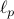

|
* equal contribution authors; otherwise, the order is based on contribution unless authors are listed in alphabetical order (noted explicitly).
Papers
The Distillation Game in LLMs: Adaptive Attacks & Efficient Defenses
Y. Allouah*, M. Haghifam*, R. Shokri, S. Koyejo
Submitted, 2026
Slides
Code
Towards Faithful Data Selection: Statistical Limits and Scalable Algorithms
A. M. Inane*, M. Haghifam*, G. K. Dziugaite, I. Mitliagkas
Submitted, 2026
From Memorization to Extraction: Provable Training-Data Recovery from Black-Box Models
G. Brown, M. Haghifam, E. Linder, R. Livni, G. Thampakkul, N. Weinberger (authors listed in alphabetic order)
In submission, 2026
What Is Your Data Worth to Mine? Algorithms and Limits for Private Two-Party Valuation
M. Haghifam, A. Blum, G. Fanti, K. K. Patel, J. Ziani
In submission, 2026
Adaptive Generate-Rank-Verify: Inference-Time Search with Costly Verification
S. Dughmi, M. Haghifam, Y.H. Kalayci (authors listed in alphabetic order)
NeurIPS 2026
Slides
Code
The Sample Complexity of Membership Inference and Privacy Auditing
M. Haghifam, A. Smith, J. Ullman (authors listed in alphabetic order)
FOCS 2026 (Invited to TPDP 2026 Special Section of Journal of Privacy and Confidentiality)
Slides
On Traceability in  Stochastic Convex Optimization
S. Voitovych*, M. Haghifam*, I. Attias, G. K. Dziugaite, R. Livni, D. M. Roy
NeurIPS 2025 (Spotlight, <3% of submissions)
Private Geometric Median
M. Haghifam, T. Steinke, J. Ullman (authors listed in alphabetic order)
NeurIPS 2024
Slides
Talk
Code
Information Complexity of Stochastic Convex Optimization: Applications to Generalization and Memorization
I. Attias, G. K. Dziugaite, M. Haghifam, R. Livni, D. M. Roy (authors listed in alphabetic order)
ICML 2024 (Oral, Best Paper Award: Top 10 of 10,000 submissions)
Talk
Faster Differentially Private Convex Optimization via Second-Order Methods
A. Ganesh, M. Haghifam, T. Steinke, A. Thakurta (authors listed in alphabetic order)
NeurIPS 2023
Code
Why Is Public Pretraining Necessary for Private Model Training?
A. Ganesh, M. Haghifam, M. Nasr, S. Oh, T. Steinke, O. Thakkar, A. Thakurta, L. Wang (authors listed in alphabetic order)
ICML 2023
Limitations of Information-Theoretic Generalization Bounds for Gradient Descent Methods in Stochastic Convex Optimization
M. Haghifam*, B. Rodriguez-Galvez*, R. Thobaben, M. Skoglund, D. M. Roy, G. K. Dziugaite
ALT 2023
Privacy-Preserving and Approximately Truthful Local Electricity Markets: A Differentially Private VCG Mechanism
M. Hoseinpour, M. Hoseinpour, M. Haghifam, M. R. Haghifam
IEEE Transactions on Smart Grid, 2023
Understanding Generalization via Leave-One-Out Conditional Mutual Information
M. Haghifam, S. Moran, D. M. Roy, G. K. Dziugaite
International Symposium on Information Theory (ISIT), 2022
Towards a Unified Information–Theoretic Framework for Generalization
M. Haghifam, G. K. Dziugaite, S. Moran, D. M. Roy
NeurIPS 2021 (Spotlight, <3% of submissions)
Talk
On Streaming Codes With Unequal Error Protection
M. Haghifam*, M. N. Krishnan*, A. Khisti, X. Zhu, W.-T. Tan, J. Apostolopoulos
IEEE Journal on Selected Areas in Information Theory, 2021
Information-Theoretic Generalization Bounds for Stochastic Gradient Descent
G. Neu, G. K. Dziugaite*, M. Haghifam*, D. M. Roy*
COLT 2021
Sequential Classification with Empirically Observed Statistics
M. Haghifam, V. Y. F. Tan, A. Khisti
IEEE Transactions on Information Theory, 2021
Sharpened Generalization Bounds based on Conditional Mutual Information and an Application to Noisy, Iterative Algorithms
M. Haghifam, J. Negrea, A. Khisti, D. M. Roy, G. K. Dziugaite
NeurIPS 2020
Talk
Code
Information-Theoretic Generalization Bounds for SGLD via Data-Dependent Estimates
J. Negrea*, M. Haghifam*, G. K. Dziugaite, A. Khisti, D. M. Roy
NeurIPS 2019
Code
Joint Sum Rate And Error Probability Optimization: Finite Blocklength Analysis
M. Haghifam, M. Robat Mili, B. Makki, M. Nasiri-Kenari, T. Svensson
IEEE Wireless Communications Letters, 2017
Workshop Papers
Differential Privacy with MedMNIST
L. Zhang, S. Allin, M. Haghifam, M. Pawliuk, R. Engineer, F. Shkurti
15th Symposium on Educational Advances in Artificial Intelligence (teaching paper based on the design of course material on DP)
Sequential Classification with Empirically Observed Statistics
M. Haghifam, V. Y. F. Tan, and A. Khisti
IEEE Information Theory Workshop, 2019
Streaming Codes with Unequal Error Protection against Burst Losses
M. Haghifam, A. Badr, A. Khisti, X. Zhu, W.-T. Tan, J. Apostolopoulos
The 29th Biennial Symposium on Communications, 2018
On joint information and energy transfer in relay networks with an imperfect power amplifier
M. Haghifam, B. Makki, M. Nasiri-Kenari, T. Svensson
IEEE International Symposium on Personal, Indoor, and Mobile Radio Communications (PIMRC), 2016
State estimation in electric distribution networks in presence of distributed generation using the PMUs
M. Haghifam, M. R. Haghifam, B. Safari Chabok
CIRED 2012
|